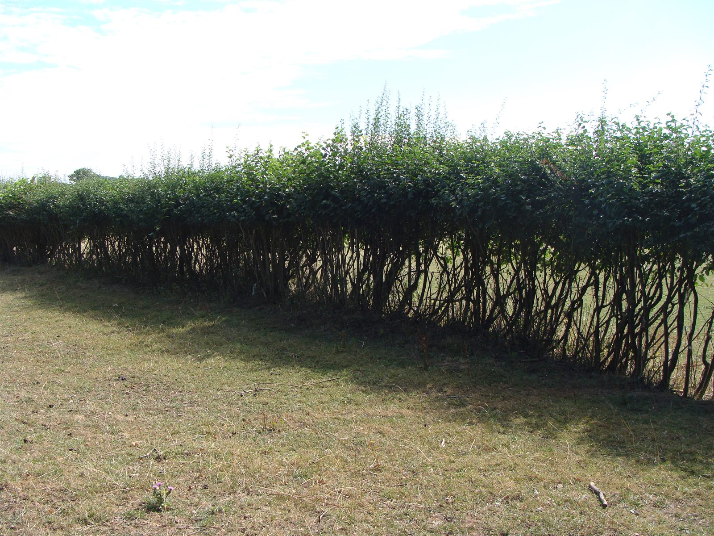
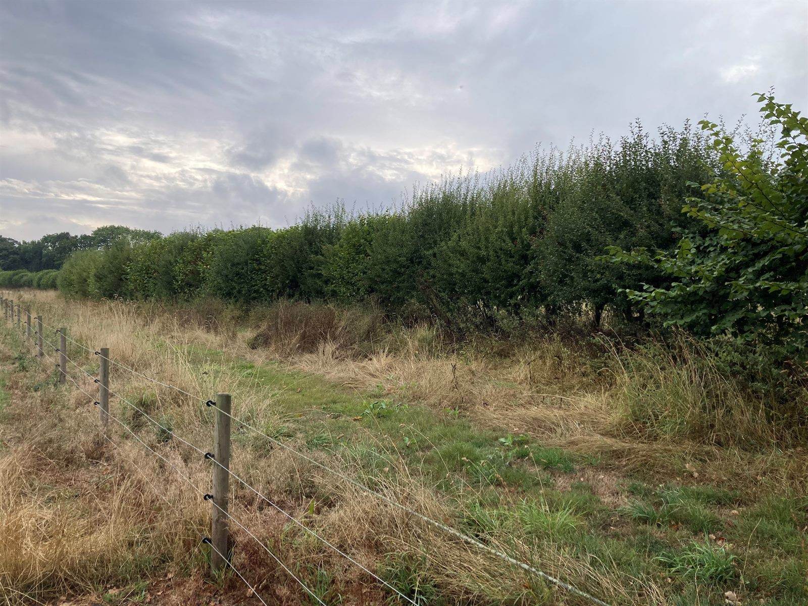
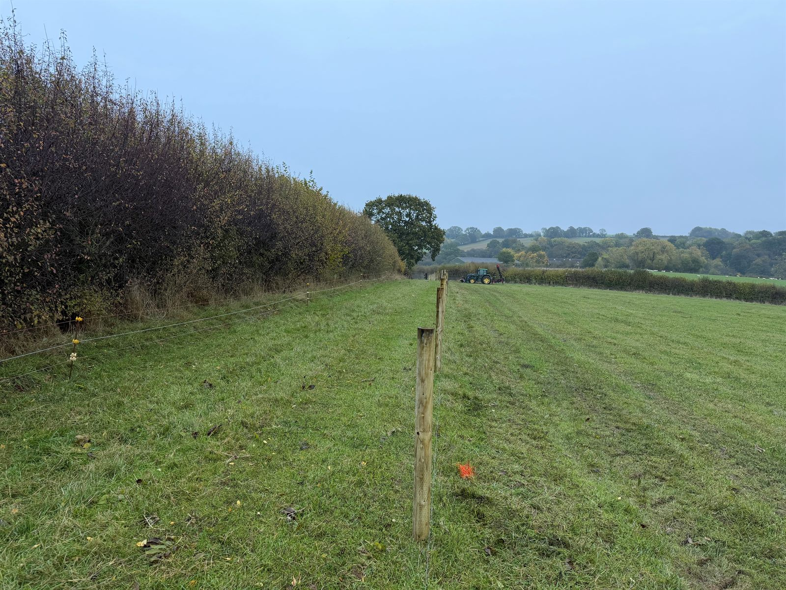
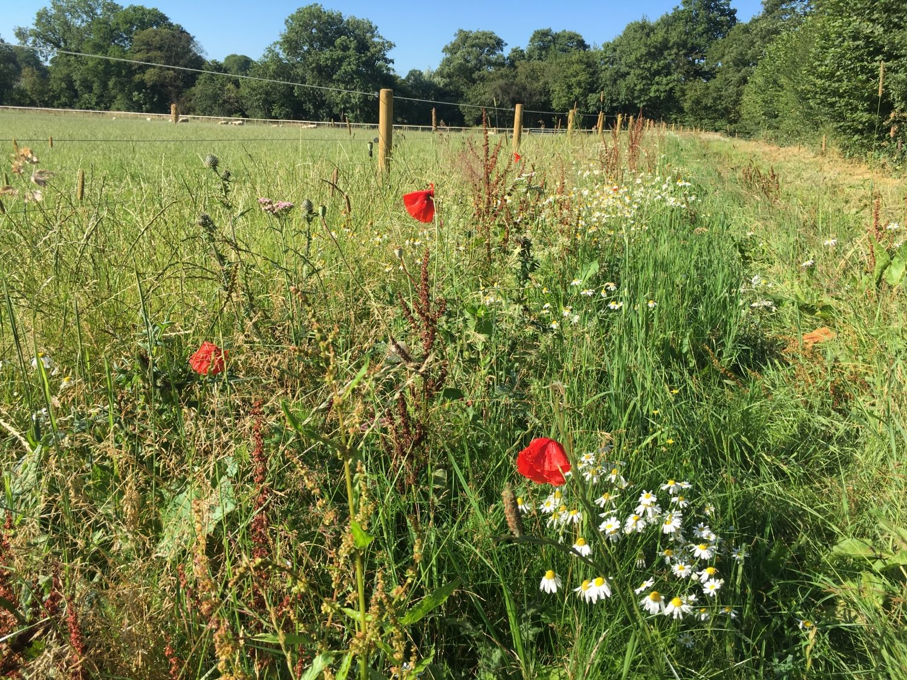

Our Sustainable Farming Incentive agreement
We applied for the Sustainable Farming Incentive (SFI) in early July, in the first application window, which was aimed at smaller farms and those without an existing agreement. At under 50 hectares, we fall below the small-farm limit. Our agreement started at the beginning of October.
We were one of the lucky farms to get one. Defra reported around 6,500 applications in that first window, with 69% of them from farms of up to 50 hectares. The second window opened on 22 September, and the money was reported to have been allocated within hours of opening. It's sad that so many farms that want to be productive but also do the best for wildlife were disappointed because of the shortage of funds.
Very low nutrient inputs and a late hay cut
One of the key grassland actions we've gone for is very low nutrient inputs, combined with a late cut for hay. Here's what those mean, and why they're good for wildlife.
Very low nutrient inputs. Under the scheme rules, we can put on no more than a small amount of manure or fertiliser (the equivalent of 12 tonnes of farmyard manure per hectare), and no digestate or industrial by-products. We can't plough, re-seed, cultivate or drain the field, and pesticides are limited to spot treating things like thistles, nettles and bracken. That's the opposite of how a heavily fertilised field is managed, and it's the point: on rich soil a few vigorous grasses grow fast and crowd everything else out, while on poorer soil, wildflowers and finer grasses can hold their own. The aim, in the scheme's own words, is a sward with flowering grasses and wildflowers from late spring through summer, with some grasses left to seed and tussocky areas allowed to develop. That gives nectar and shelter to insects and food for farmland birds, and it reduces nutrient run-off into watercourses.
A late cut for hay. The late-cut haymaking option means we don't graze or cut the field for at least nine weeks in spring and summer, and the hay harvest is usually no earlier than mid-July. That lets the later-flowering plants and the grasses finish flowering and set seed, so they come back next year. It gives bees and other insects pollen and nectar through the summer, and it gives ground-nesting birds, such as skylarks, and wading birds, such as curlew where they occur, time to nest and raise their chicks before the mower arrives. We also leave an uncut margin along at least half the edge of the field, and the cut crop is left to dry in the field, turned at least once, before it's taken off. Afterwards, the field is grazed or given a second cut to keep the sward in good shape.
Protecting the hedgerows from sheep
The funding will also allow us to protect the hedgerows from sheep, which like to browse the bottom of hedges.
Hedgerows are some of the most valuable wildlife habitat on a farm. Estimates vary, but they're thought to support hundreds of plant species, over a thousand insects, dozens of nesting birds and most of our small mammals, and they act as corridors that wildlife use to move across the landscape. The UK is thought to have lost up to half of its hedgerows before their wildlife value was understood. A hedge that is left unmanaged becomes thin at the base, and loses the dense, sheltered structure that so many species depend on, and this is exactly what browsing animals make worse.
Once the sheep have browsed the base of the hedge, it's difficult for the shrubs to recover, and you end up with a severely depleted hedge which is bare at the bottom, as in this stretch of hedge.

Before: a hedge browsed by sheep is thick at the top but bare and open at the bottom.
We've already noticed a significant improvement in hedges with this approach. This is the same stretch of hedge this year, a couple of years after it was fenced off.

After: the same hedge, a couple of years after fencing, now full right down to the ground.
Fences set back from the hedge
With the help of a local contractor, we are currently putting in some new fences. We space the fences a good few metres from the hedges, so that the strip in between becomes a wildlife corridor, which maximises the benefit.

New fencing going in, set well back from the hedge.
Once the fence is installed, we also keep a mown path along the margin between the hedge and the fence, for walking and riding. The rest of the margin is left to grow. These strips are ideal for wildflower margins, and they're also great for spotting wildlife, as animals like rabbits and hares use them and it's far easier to see them than in long grass. The transition zones are where things happen: short grass to long grass, long grass to shrub, and on to woodland. Each step in the structure suits different insects, birds and mammals. This is what we're aiming for:

The aim: a flower-rich margin between the fence and the hedge.
Reusing fences from elsewhere on the farm
We're also able to repurpose fences from other parts of the farm. Here we are using the tractor and front loader with a chain to pull out posts. The insulators have already been unscrewed from the posts. Sometimes we can even reuse the strands of wire, though this is more difficult.
Pulling out old fence posts with the tractor, front loader and a chain.
I've got the easy job in the tractor while Olwen is attaching the chain to the post. In the video you can hear Olwen ensuring that health and safety is being followed!